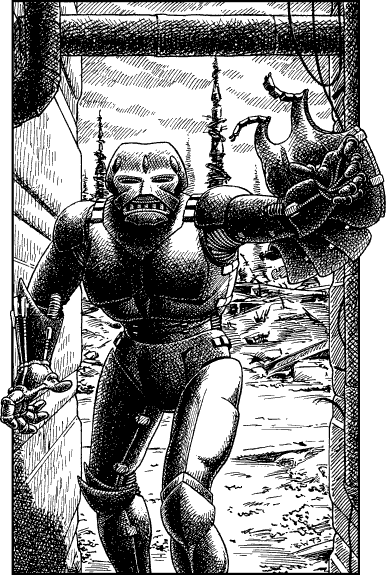

276
You make your way towards the avenue and select an ideal place from where you can launch an ambush. Twenty minutes tick by before you see two armoured humanoids approaching. One walks several paces behind the other, but both are on their way towards the tower. At first you are discouraged that there are two, fearing that an ambush will be harder to effect. But as they draw closer you note that neither appears to be carrying weapons.
You let the first warrior pass and then you strike the second one, dragging him off the street and into the dark alley where you have been lying in wait. A sharp blow beneath the chin-guard of his helmet renders him unconscious, and swiftly you begin to strip away his armour. All is going to plan until a scraping noise behind alerts you to trouble. His companion has noticed that he is alone and has retraced his steps to investigate the sudden disappearance of his brother-in-arms.
You are holding an armoured breastplate in both hands when he comes striding into the alley. You hurl it at him, hoping to buy yourself a few precious seconds in which you can unsheathe your weapon, but the warrior bats it aside and attempts to close his hands around your throat.

Manoyd (with power gloves): COMBAT SKILL 40 ENDURANCE 40
Unless you possess Grand Weaponmastery and have attained the rank of Grand Crown, you must reduce your COMBAT SKILL by 4 for the duration of this fight. 18
If you win the combat, turn to 289.
Footnotes
[18] This penalty does not appear to follow the rule that Grand Masters who fight unarmed lose no COMBAT SKILL. It is not clear whether this is an intentional exception to the rules or whether this is an accidental use of the rules for the earlier Magnakai and Kai series.